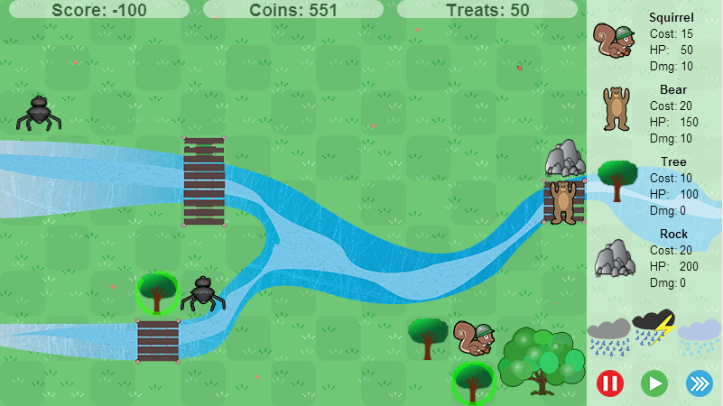

Another school project where my group did a variation on tower defense. In our version, each map is divided into a grid
where the enemies (robots) move and the towers (animals) can be placed. The towers can be placed in real time and cause
the path of the enemies to change if they obstruct the path. My contribution, other than being the manager of a team
of fifteen people, was to integrate all of the client side pieces together, do the power ups, towers, victory conditions,
home base, create the test suite, write many of the tests, and quite a bit more.